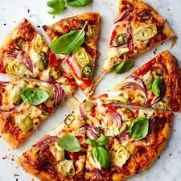

Homemade Pizza

Description
We love to make this homemade pizza recipe together - one person makes the dough while the other preps the toppings. It's also great for entertaining because guests can customize their final meals.
Ingredients
- Pizza Dough
- 1/2 heaping cup pizza sauce
- 8 oz fresh bocconcini mozzarella, sliced
- 1/2 cup sliced cherry tomatoes
- 10 basil leaves
- Pince red pepper places
- EVOO, for drizzling
Steps
- Preheat the oven to 500°F.
- Spread the pizza sauce onto the dough.
- Top with the fresh mozzarella and tomatoes and bake 10 to 12 minutes, or until the crust is browned.
- Remove from the oven and top with fresh basil leaves and a pinch of red pepper flakes.
- Drizzle with olive oil and serve.
Back Home